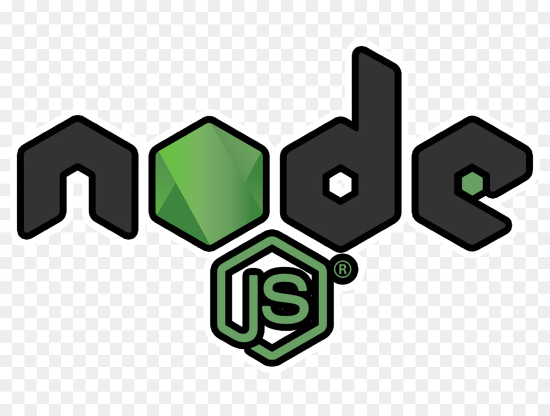
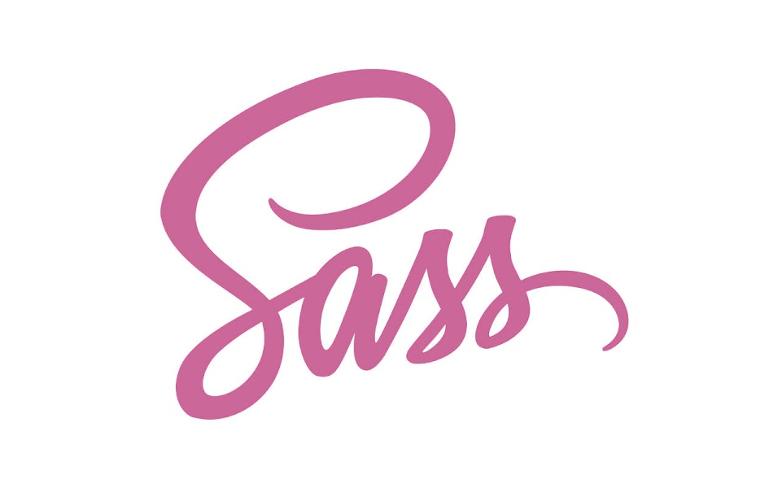

Mis tecnologias







full stack developer
Soy desarrollador Full-stack, además de mis habilidades técnicas, me soy capaz de trabajar en colaboración con otros desarrolladores, diseñadores y gerentes de proyecto para crear aplicaciones web efectivas y de alta calidad. Además, estoy constantemente aprendiendo y actualizando mis habilidades para mantenerte al día con las últimas tecnologías y tendencias en el desarrollo web. Mi área más destaca es el fornt-end, en la cual me siento cómodo y tengo más habilidad.
En resumen, como desarrollador Full-stack, soy un profesional altamente competente y bien redondeado con habilidades técnicas y de comunicación sólidas, lo que me permite trabajar en cualquier etapa de un proyecto de desarrollo web y ser un miembro valioso del equipo.
Está hecho con react js y tailwind, es responsive e interactivo. Se trata de una app donde se puede hacer pedidos gourmet, esta es una versión demo en la cual muestra la interfaz nada más de la página.
Está aplicación hecho con react js del lado del cliente y del lado del servidor con Node js y Mongodb. Es un chat que es a tiempo real, en el cual vos puedes elegir tu avatar favorito e interactuar con tus contactos. En la parte de inicio hay un formulario para registrarse una vez ya echo puedes ingresar con tu nombre de usuario y contraseña.
Aplicación en la cual puedes agendar tus tareas como recordatorio, en la cual si ya la has realizado puedes eliminarla o quieras modificar se lo pueda hacer. Esta echa con html, css, javascript está programado para que este guardado en localStorage. Para que cada vez que quiera ingresar a la app este tu nota.
Esta app trata de un formulario en el cual vos pode registrarte, también puedes modificar si te has equivocado en algo e eliminar dicho usuario registrado, esta echo con html, css, javascript tambien la utilizacion de localStorage para poder guardar los usuarios y permanezcan al cargar la página.
Este curso se basó en la enseñanza de html y css, también con dos framenwords bootstrap y sass. Tuve que realizar una página basada en estas tecnologías, todo esto subido a GitHub.
Estuve trabajando con todos los fundamentos de javascripts, también con bibliotecas y APIs.
Estudié los principales fundamentos de esta librería. Tales como los hooks, context, reac-ruter-dom entre otros.
Estuve trabajando con express y mongodb, creando una base de datos sólida. Para poder ser consumido por el cliente.